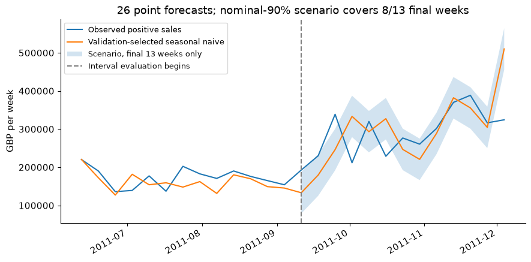
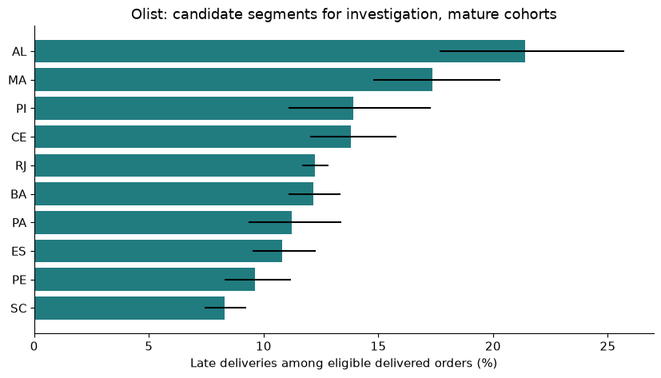
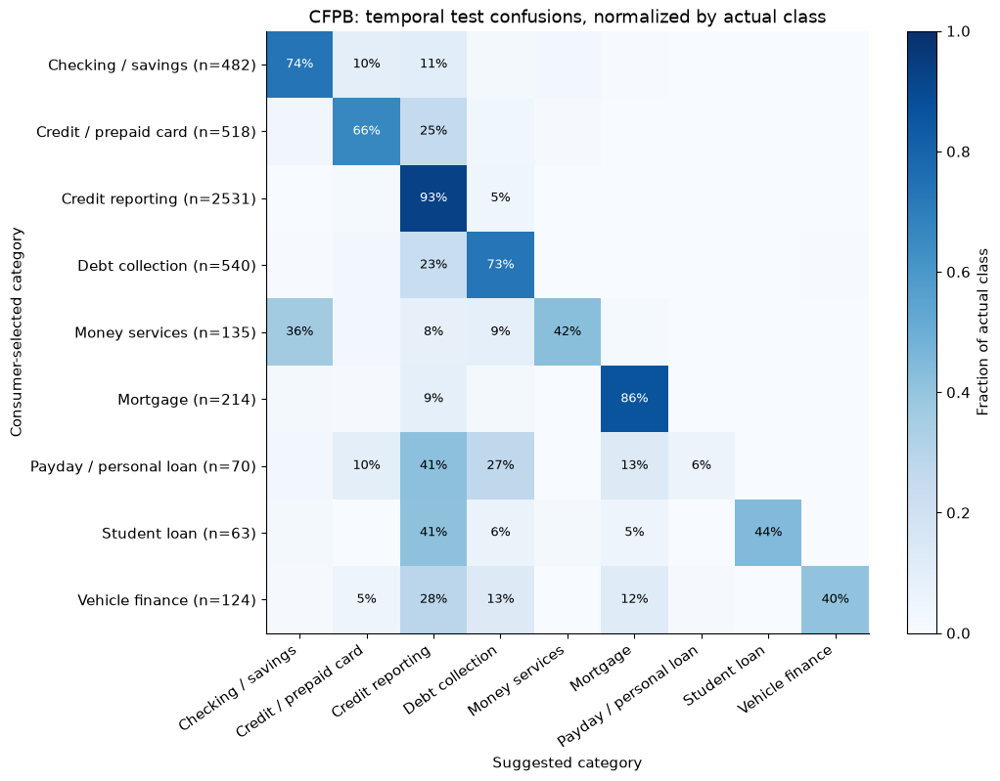
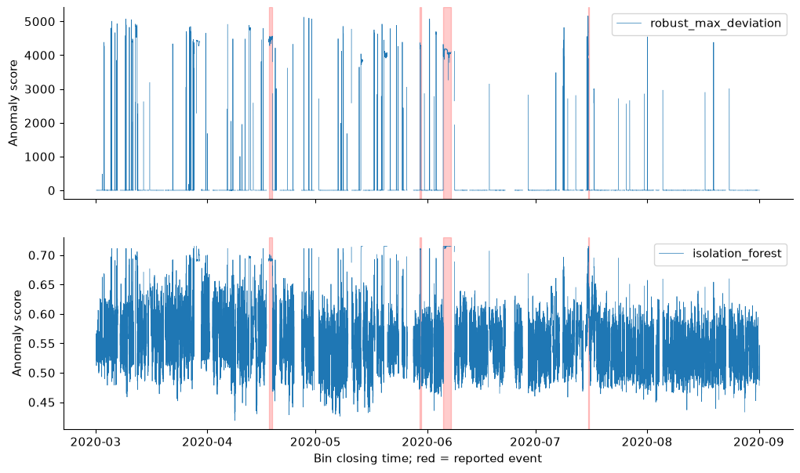
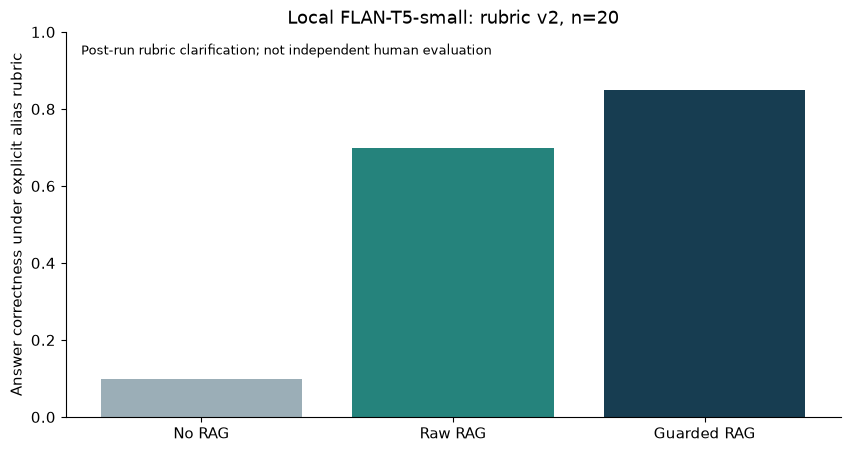
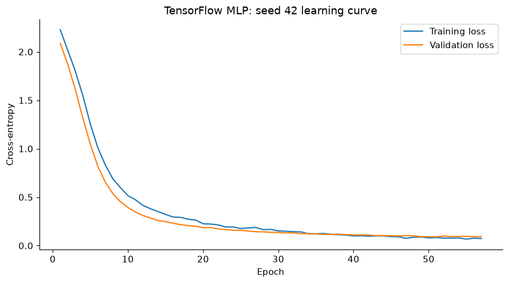

Reviewed public edition · AI-assisted portfolio · 2026-10-23T13:44:14+00:00Decision-Focused Data Scientist
Interpretable ML · Reliable Analytics
From imperfect data to defensible decisions.
Data contracts, baselines, temporal validation, abstention and operational limits, backed by executable evidence.
Portfolio projects and local technical demonstrations. Personal autonomous proficiency is unverified. Public portfolio edition reviewed 26 October 2026. Existing Telco source unchanged. Docker build and remote deployment require their own evidence.
Evidence register · Publication status · Code-only MIT and source rights · Production tracker · Reproduce · AI role
EXISTING PROJECT REPRODUCEDPRJ1 · Existing Telco Churn
Original analysis, three tests and nine notebook cells reproduced. Test AUC .8433; top30: 423 contacts, 246 observed churners. No demonstrated campaign benefit.
Existing project auditLOCAL EVIDENCE REVIEWEDPRJ2 · Retail Sales Forecasting & Operational Planning
Validation selected seasonal_52. On 26 held-out one-week origins: MAE £40,170.66, WAPE 17.40%, signed bias £3,040.39. Separate interval evaluation: 61.54% coverage on 13 weeks. Exact-dedup seasonal WAPE 14.34% is a sensitivity, not a reason to alter the target.

Limits and evidence
Thirteen selection weeks; 26 point-forecast test weeks split into 13 calibration and 13 interval-evaluation weeks. The nominal 90% scenario fails to achieve that coverage; no 90% reliability guarantee. Annual history is short and duplicates ambiguous. Mean-4 is better on this test, but no test-driven model switch is made. Costs are hypothetical.
Case study · Measured results · Case-study copyPRJ3 · E-commerce Delivery Reliability Analytics
SQL retained 99,441 unique orders. All-period late rate is 6,534/96,470 = 6.77%, conditional on eligible delivered orders. Mature 60-day cohort rate: 6.85%.

Limits and evidence
Noncommercial Olist restriction. Undelivered orders are outside the late-rate denominator and explicitly counted. Export date is not known; latest purchase is a proxy, with 30/60/90-day maturity sensitivities. Wilson intervals assume independent Bernoulli outcomes; repeat-customer/route dependence and confounding remain.
Case study · Measured results · Case-study copyPRJ4 · Financial Complaint Triage & LLM Evaluation
Selected logistic_tfidf on validation macro-F1. Novel temporal test n=4,677: accuracy 80.74%, macro-F1 0.632, majority accuracy 54.12%. Threshold 0.6 has 273 wrong accepted suggestions; 1,506 low-confidence novel cases require review. Overall sampled workflow: 3,171/8,218 suggestions accepted (38.59%); 5,047 assigned to review including withheld text repeats.

Limits and evidence
No automatic routing recommended: aggregate accepted accuracy hides weak true-class outcomes. Results are on a 3% ID sample and template-filtered cohort. Character matching is not semantic deduplication. Confidence/Wilson search does not give a post-selection probability guarantee. Private text and vocabulary excluded; human-verification workflow required.
Case study · Measured results · Case-study copyPRJ5 · Industrial Anomaly Detection & Alert Reliability
At training quantile .995: IsolationForest 30 episodes versus robust baseline 175; 23 IF episodes do not overlap reports. Overlap in 4/4 report windows; prior-24h alerts in 1/4. Valid exposure 142.16 equivalent days.

Limits and evidence
One compressor and four documented windows. No full false-positive ground truth: outside-report episodes are unverified. Threshold grid is a sensitivity, not test tuning. Bins need >=54 observations and are available at closing time; 3-bin persistence. Prior alerts may be unrelated; no causal precursor or maintenance benefit claim.
Case study · Measured results · Case-study copyLAB1 · RAG & Local Generative AI Evaluation
Local FLAN-T5-small, 20 fixed questions. Explicit post-run rubric v2: raw RAG 70%, guarded 85%, no-RAG 10%; reference-document precision 83.33%. Original substring baseline score 0% is preserved but is not the semantic headline.

Limits and evidence
Tiny authored set, post-run rubric clarification, no blind human evaluation. Document matches are not citation entailment. The guard still accepts irrelevant copied phrases. 7-D SVD vectors are latent-semantic, not neural. Zero API charge excludes hardware/electricity. Not suitable for unattended use.
Case study · Measured results · Case-study copyLAB2 · PySpark Sensor Data Engineering
Spark 4.2.0, local[2]: 1,516,948 sensor rows, 8 monthly aggregates. Spark Parquet roundtrip and pandas parity passed at tolerance 1e-10. Elapsed 21.04s.
Limits and evidence
Local scale only. Timezone setting is computational normalization of naive timestamps, not evidence of original UTC. Monthly aggregation has only eight output rows; two files are sufficient and directory partitioning adds no value.
Case study · Measured results · Case-study copyLAB3 · TensorFlow vs Classical Baseline Benchmark
Held-out digits test: logistic accuracy 96.39%; TensorFlow seed accuracies 97.22%, 96.67%, 96.94%. Retained by validation complexity rule: logistic_regression.

Limits and evidence
Small 8×8-image benchmark, not an industrial task. Split is stratified by image, not writer-disjoint; writer dependence cannot be excluded. Three initialisation seeds share one test set. CPU timings are environment-specific; reduced Windows runtime omits only custom-op C++ headers.
Case study · Measured results · Case-study copyLAB4 · Local API, Docker & CI Delivery
Local unit/ASGI and HTTP tests passed. Actual Docker image build, loopback health/forecast/rejection, healthcheck and stop verified.
Limits and evidence
Remote GitHub Actions and cloud deployment are not executed. Numeric synthetic fixtures only; no public endpoint or operational benefit claim.
Case study · Measured results · Case-study copy